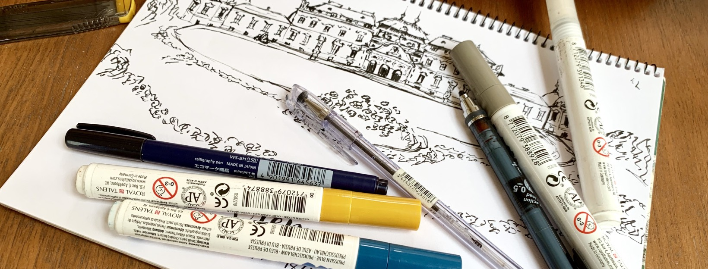
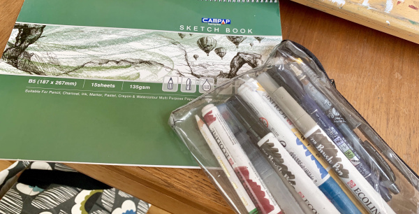
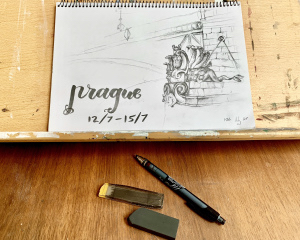
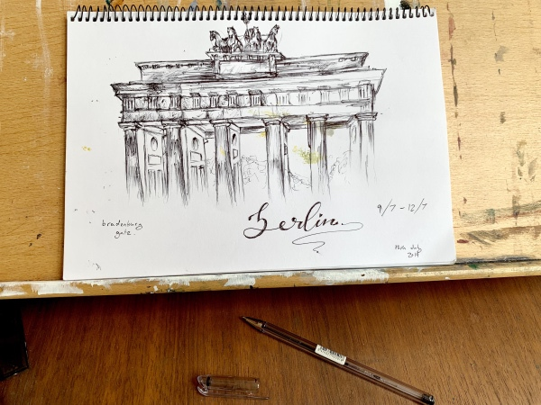
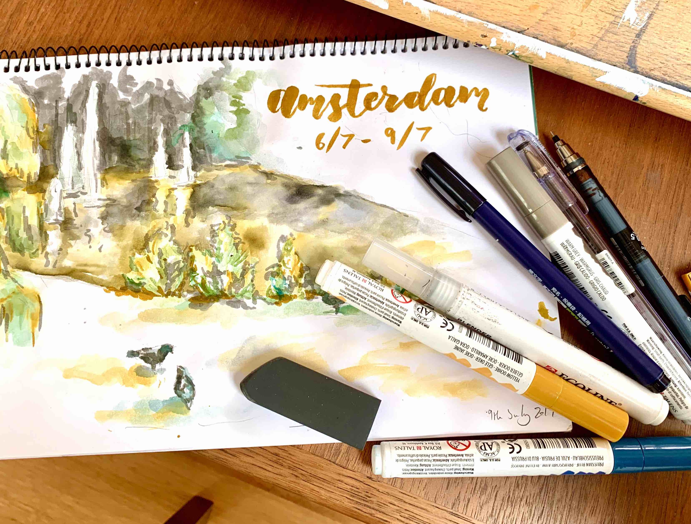
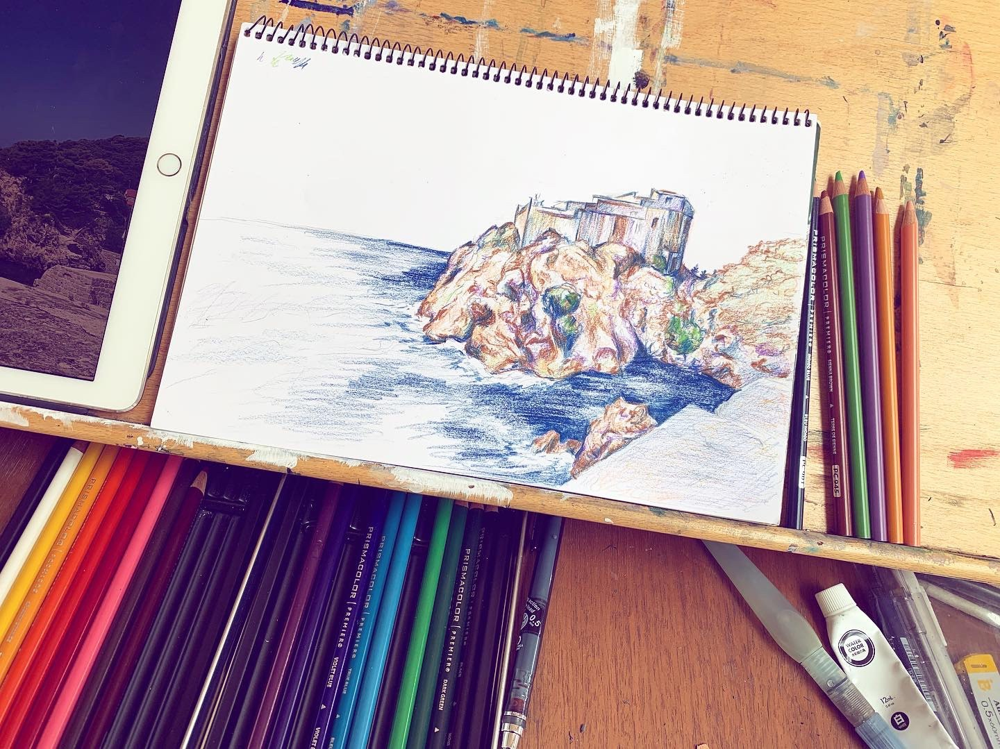

Top Art Supplies to take on Holiday
Note: This article contains affiliate links. Purchasing anything using these links helps support my blog without any extra cost to you :)
It can often be difficult to decide what art supplies you can afford to take on holiday – which are most portable, least likely to get damaged and still suitable to create stunning artworks on-the-go.
I’ve compiled a list of my absolute essentials for sketching when travelling abroad, from basic pencils and paper to cheat methods to create your own watercolour paintings.
I recently went interrailing with my friends, travelling across six countries in Europe over the span of three weeks. I documented the whole trip in a sketchbook, using a variety of media which I had decided were absolute must-haves for the trip!
This article is a collaboration with Viola from The Cranky Damsel, my interrailing buddy and go-to friend for all things travel! She’s written the amazing article This is why Everyone Should go Interrailing so be sure to check that out – it is well worth a read if you’re a newbie to travelling abroad like we were!
The following sketching tools literally go everywhere with me. I always carry these things in my handbag when going about my day-to-day life, so it would be impossible for me not to include any of the following!
Unsurprisingly, having a sketchbook to contain your artistic adventures is a must for any trip abroad. It helps to pick a sketchbook which has paper complimenting your main medium e.g. watercolour paper for wet mediums, half-tone paper for soft pastels. I used a cheap 15-page sketchbook – the perfect size to fill over a few weeks holiday.
This goes without saying as being an absolute essential for any artist anywhere. Completely versatile. Not much else to say really. My go-to pencils right now are the Palomino Blackwing 602 and the Uni Ball Kuru Toga Self Sharpening Mechanical Pencil.
Palomino Blackwing pencils are the créme de la créme of the pencil world and a wonderful investment for any artists. I've written an article about what makes them so special here, which you can check out if you're interested in learning more.
The Uni Ball Kuru Toga pencil is a quality mechanical pencil that has the added bonus of keeping your pencil lead sharp. A really lovely mechanical pencil that is stylish while comfortable to hold.
Rubbers, along with any pencil leads/sharpeners you may need, are another necessity for any pencil case. Any decent eraser will do, but currently I use the Derwent Soft Art Eraser, which is great for erasing both small details and larger areas.
A lot of artists don't realise how versatile a ballpoint pen can be, being a perfect tool for quick drawings while travelling. Lightly sketching with my ballpoint pen followed by confident marks can save so much time and requires fewer materials than a set of drawing pencils, for an equally impressive result. I really don't have a go-to choice for this one – any ballpoint pen will give more or less the same quality artwork.
Perhaps not considered a standard choice in most people's eyes but an absolute necessity in mine, a decent white gel pen can really enhance any drawing. As well as being a great tool for highlights, especially in half-tone/black paper sketchbooks, they are also useful for erasing small mistakes such as in ballpoint pen drawings.
There are loads of decent opaque white gel pens such as those by Gelly Roll or Uni-Ball, but one of my favourites right now is the Pentel Hybrid White Gel Pen. All these are great pens that can add to any field sketch.
These are some personal favourites of mine for travel sketching, while I feel can allow for some much more varied artworks.
I am utterly obsessed with brush pens right now, namely for calligraphy but also for the unique sketchy effect it gives quick drawings. My favourite fude pen is the Tombow Fudenosuke Pen (Hard) , which is ideal for both of these uses. However, there are also beautiful synthetic bristle brush pens like the infamous Pentel Pocket Brush Pen which can produce equally gorgeous results.
Have you ever wanted to venture into the world of wet media during your travels, despite not having room in your small pencil case for those watercolours or inks? Indeed, all you need is some sort of inky pen (felt tips or brush pens work great for this!) and a water brush! Simply pick up some ink with the tip of the water brush and use it like normal watercolours. It is an amazingly versatile tool to have on the go!
The classic go-to water brush for most people is the Pentel Aquash range, which are absolutely brilliant to use. However, if you're looking for a different brand to try, I highly recommend the brushes by Jane Davenport - these water brushes come in great sizes and are very durable!
Without a doubt, the Ecoline Watercolour Brush Pens are a must have for me - literally advertised as "liquid watercolours", these pens work great with water brushes using the above technique. Aside from that, these pens are beautiful for general handlettering and sketching. I recommend packing at least the primary colours plus a grey and black, for maximum range of hues.
Another great tip for fake watercolour painting is using a plastic surface to mix colours. Simply scribble down on the plastic surface to get some ink down, then use a water brush to mix colour before painting.
I hope this article has been useful for any struggling artists trying to shrink their travel art supplies. If you're interested in purchasing any of the above, please use my Amazon Affiliate links – it really helps support my blog! :)
Again, make sure you check out Viola's amazing blog and her exciting interrailing articles and don't forget to subscribe to my blog below for regular updates on all theses artsy and study related!
